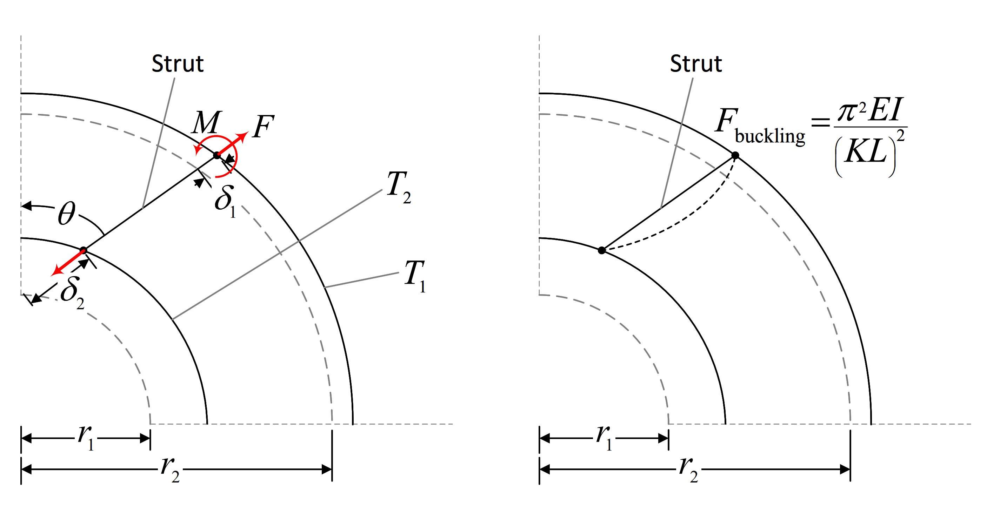
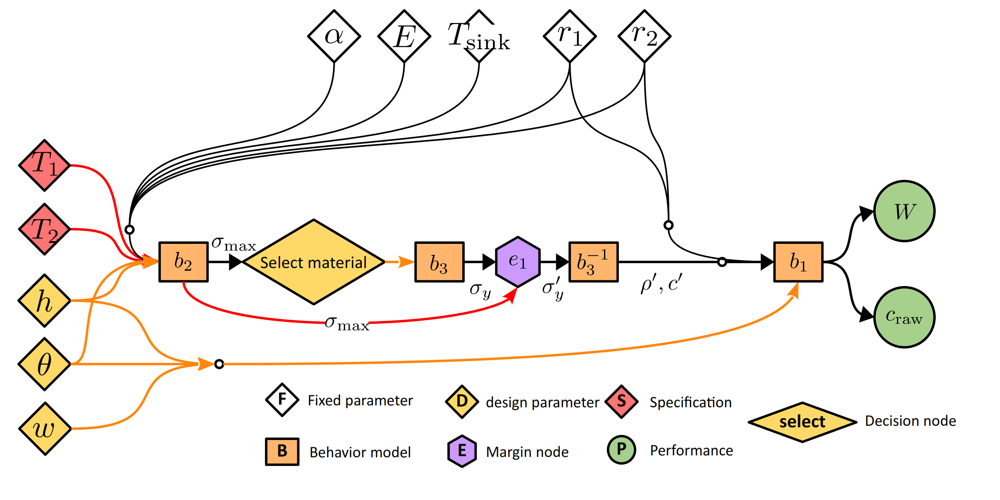

Identification of design margins in the design of a strut
Defining the components of the margin analysis network
The components of the margin analysis network are:
Input parameters
Design parameters
Fixed parameters
Input specifications
Intermediate parameters
Decision nodes
Output parameters
Performance parameters
Target thresholds
Decided values
Design parameters

Fig.1 Schematic of strut design example
This example shows how to evaluate the design margins of a strut which is a part of the turbine rear frame of an aeroengine. In this example, we consider three design parameters of the strut the lean angle \(\theta\), the vane width \(w\), and the vane height \(h\)
[1]:
from mvm import DesignParam
# define design parameters
d1 = DesignParam(100.0, 'D1', universe=(70.0, 130.0), variable_type='FLOAT', description='vane length', symbol='w')
d2 = DesignParam(15.0, 'D2', universe=(5.0, 20.0), variable_type='FLOAT', description='vane height', symbol='h')
d3 = DesignParam(10.0, 'D3', universe=(0.0, 30.0), variable_type='FLOAT', description='lean angle', symbol='theta')
design_params = [d1,d2,d3]
Fixed parameters
We also specify some constants for this example, such as elastic modulus \(E\), coefficient of thermal expansion \(\alpha\), hub and shroud radii, \(r_1\) and \(r_2\), respectively, and ambient temperature \(T_\mathrm{sink}\)
[2]:
from mvm import FixedParam
# define fixed parameters
i1 = FixedParam(7.17E-06, 'I1', description='Coefficient of thermal expansion', symbol='alpha')
i2 = FixedParam(156.3E3, 'I2', description='Youngs modulus', symbol='E')
i3 = FixedParam(346.5, 'I3', description='Radius of the hub', symbol='r1')
i4 = FixedParam(536.5, 'I4', description='Radius of the shroud', symbol='r2')
i5 = FixedParam(25.0, 'I6', description='ambient temperature', symbol='T_sink')
fixed_params = [i1, i2, i3, i4, i5]
Input specifications
The strut experiences a compressive force \(F\) and bending moment \(M\) as a result of non-uniform expansion of the turbine rear frame during operation. This is attributed to two temperatures \(T_1\) and \(T_2\) that occur at the shroud and hub surfaces, respectively as shown below:

Fig.2 Temperature loads
The temperatures \(T_1\) and \(T_2\) are defined as input specifications. The argument inc specifies the expected direction of change of these temperatures during operation and will be used later on to compute the ability of a design margin to absorb change of said temperatures
\(T_1\) is expected to decrease by 1% of the nominal value
\(T_2\) is expected to increase by 1% of the nominal value
If the absolute change is to be specified, then change the argument inc_type to 'abs'
[3]:
from mvm import InputSpec
# define input specifications
s1 = InputSpec(450, 'S1', universe=[325, 550], variable_type='FLOAT', description='nacelle temperature',
symbol='T1', inc=-1e-0, inc_type='rel')
s2 = InputSpec(425, 'S2', universe=[325, 550], variable_type='FLOAT', description='gas surface temperature',
symbol='T2', inc=+1e-0, inc_type='rel')
input_specs = [s1, s2]
Performance parameters
we then calculate weight and cost as:
where \(c\) is the raw material cost per unit weight. and \(L\) is the length of the strut given by \(L = -r_1\cos{\theta} + \sqrt{{r_2}^2 - {r_1}^2\sin^2{\theta}}\)
\(W\) and \(\mathrm{cost}\) are performance parameters. Their calculation is given by a behaviour model b1
[4]:
from mvm import Behaviour
import numpy as np
# this is the weight and cost model
class B1(Behaviour):
def __call__(self, rho, w, h, theta, r1, r2, cost_coeff):
L = -r1 * np.cos(np.deg2rad(theta)) + np.sqrt(r2 ** 2 - (r1 * np.sin(np.deg2rad(theta))) ** 2)
weight = rho * w * h * L
cost = weight * cost_coeff
self.performance = [weight, cost]
b1 = B1(n_i=0, n_p=2, n_dv=0, n_tt=0, key='B1')
We specify whether increasing this parameter is beneficial or detrimental to the design’s performance using the direction argument
[5]:
from mvm import Performance
# Define performances
p1 = Performance('P1', direction='less_is_better')
p2 = Performance('P2', direction='less_is_better')
performances = [p1, p2]
Target thresholds
The strut must support the forces shown perviously on Figure 2:
A compressive stress \(\sigma_a\) due to the force \(F\)
A bending stress \(\sigma_m\) due to the bending moment \(M\)
The maximum stress value becomes the target threshold.
This is defined by behaviour model b2
[6]:
# this is the stress model
class B2(Behaviour):
def __call__(self, T1, T2, h, theta, alpha, E, r1, r2, T_sink):
L = -r1 * np.cos(np.deg2rad(theta)) + np.sqrt(r2 ** 2 - (r1 * np.sin(np.deg2rad(theta))) ** 2)
sigma_a = (E * alpha) * ((T2 * r2) - (T1 * r1) - (T_sink * (r2 - r1))) * np.cos(np.deg2rad(theta)) / L
sigma_m = (3 / 2) * ((E * h) / (L ** 2)) * (
alpha * ((T2 * r2) - (T1 * r1) - (T_sink * (r2 - r1))) * np.sin(np.deg2rad(theta)))
self.threshold = max([sigma_a, sigma_m])
b2 = B2(n_i=0, n_p=0, n_dv=0, n_tt=1, key='B2')
Decided values (from Decision nodes)
After calculating the target thresholds (what the design needs to do) we have to make decisions regarding certain ‘off-the-shelf’ components. The decided value in this case is given by the yield stress of the selected material. We define a decision node using the Design class and a corresponding Behaviour model to translate the selected material to a decided value. The material model also supplies two additional intermediate parameters that are required by the cost model in b1. They
are the density \(\rho\) and the cost density \(c\)
[7]:
from mvm import Decision
class B3(Behaviour):
def __call__(self, material):
material_dict = {
'dummy' : {
'sigma_y' : 92, # MPa
'rho' : 11.95e-06, # kg/mm3
'cost' : 0.1 # USD/kg
},
'Steel' : {
'sigma_y' : 250, # MPa
'rho' : 10.34e-06, # kg/mm3
'cost' : 0.09478261, # USD/kg
},
'Inconel' : {
'sigma_y' : 460, # MPa
'rho' : 8.19e-06, # kg/mm3
'cost' : 0.46, # USD/kg
},
'Titanium' : {
'sigma_y' : 828, # MPa
'rho' : 4.43e-06, # kg/mm3
'cost' : 1.10 # USD/kg
},
}
chosen_mat = material_dict[material]
self.intermediate = [chosen_mat['rho'], chosen_mat['cost']]
self.decided_value = chosen_mat['sigma_y']
return self.decided_value
b3 = B3(n_i=2, n_p=0, n_dv=1, n_tt=0, key='B3')
# Define decision nodes and a model to convert to decided values
decision_1 = Decision(universe=['Steel', 'Inconel', 'Titanium'], variable_type='ENUM', key='decision_1',
direction='must_not_exceed', decided_value_model=b3, description='The type of material')
decisions = [decision_1, ]
We concatenate all behaviour models into a list
[8]:
behaviours = [b1,b2,b3]
Excess margins
The design must support the following loads
A maximum stress less than the yield stress \(\sigma_y\)
We have one design margin given by:
It is of the must_not_exceed type
[9]:
from mvm import MarginNode
# Define margin nodes
e1 = MarginNode('E1', direction='must_not_exceed')
margin_nodes = [e1,]
Calculation of the value of excess margins in the strut
Constructing the margin analysis network
We combine all the perviously defined parameters and behaviour models inside a MarginNetwork object. The forward method represents a single calculation pass of the margin analysis network
The randomize method is optional and is used to randomly seed any probabilistic input specifications or behaviour models (see example in next section). The MAN object below mimics the MAN shown in the figure below:

Fig.3 Margin analysis network of the strut example
[10]:
from mvm import MarginNetwork
# Define the MAN
class MAN(MarginNetwork):
def randomize(self):
pass
def forward(self, num_threads=1, recalculate_decisions=False, allocate_margin=False, strategy=['min_excess',], outputs=['dv',]):
# retrieve MAN components
w = self.design_params[0].value # w
h = self.design_params[1].value # h
theta = self.design_params[2].value # theta
T1 = self.input_specs[0].value # T1 (could be stochastic)
T2 = self.input_specs[1].value # T2 (could be stochastic)
alpha = self.fixed_params[0].value # alpha
E = self.fixed_params[1].value # E
r1 = self.fixed_params[2].value # r1
r2 = self.fixed_params[3].value # r2
T_sink = self.fixed_params[4].value # T_sink
b1 = self.behaviours[0] # calculates weight and cost
b2 = self.behaviours[1] # calculates maximum of axial and bending stresses
b3 = self.behaviours[2] # calculates material properties
decision_1 = self.decisions[0] # select a material based on maximum bending or axial stress
e1 = self.margin_nodes[0] # margin against axial or bending failure (sigma_max,sigma_y)
p1 = self.performances[0] # weight
p2 = self.performances[1] # cost
# Execute behaviour models
# T1, T2, h, theta, alpha, E, r1, r2, T_sink
b2(T1, T2, h, theta, alpha, E, r1, r2, T_sink)
sigma_max = b2.threshold # the applied load as the target threshold
# Execute decision node and translation model
decision_1(sigma_max, recalculate_decisions, allocate_margin, strategy[0], num_threads, outputs[0])
sigma_prime = decision_1.output_value # this either the target threshold (sigma_max) or the decided value (sigma_y)
sigma_y = decision_1.decided_value # the yield stress of the chosen material
# invert decided value: to get rho, and cost_coeff
b3.inv_call(sigma_prime)
rho = b3.intermediate[0]
cost_coeff = b3.intermediate[1]
# Compute excesses
e1(sigma_max, sigma_y)
# Compute performances
# rho, w, h, theta, r1, r2, cost_coeff
b1(rho, w, h, theta, r1, r2, cost_coeff)
p1(b1.performance[0])
p2(b1.performance[1])
man = MAN(design_params, input_specs, fixed_params,
behaviours, decisions, margin_nodes, performances, 'MAN_1')
Calculating the impact of excess margin on performance
To calculate the level of overdesign w.r.t margin node \(m\) and performance parameter \(j\) given by
we need to calculate the threshold performance \(p^\text{threshold}_{mj}\), i.e., the weight of a hypothetical design where margin node \(e_m = 0\), To do so, we construct a surrogate model associated with each behaviour model that is connected to a decision node to allow interpolation of this hypothetical design. In this example it is b3 associated with decision_1.
This allows the MAN’s performance parameters \(\mathbf{p}\) to be expressed as functions in terms of the margin values \(\mathbf{e}\) and input specifications \(\mathbf{s}\)
we substitute \(e_m = 0\) while holding all the other components at their nominal values.
[11]:
# train material surrogate
variable_dict = {
'material' : {'type' : 'ENUM', 'limits' : decision_1.universe},
}
b3.train_surrogate(variable_dict,n_samples=50,sm_type='KRG')
b3.train_inverse(sm_type='LS')
___________________________________________________________________________
LS
___________________________________________________________________________
Problem size
# training points. : 50
___________________________________________________________________________
Training
Training ...
Training - done. Time (sec): 0.0009418
/home/khalil/.local/share/virtualenvs/mvmlib-9r_YoSyI/lib/python3.10/site-packages/smt/surrogate_models/krg_based.py:211: UserWarning: Warning: multiple x input features have the same value (at least same row twice).
warnings.warn("Warning: multiple x input features have the same value (at least same row twice).")
We now calculate the impact using mvmlib using the Kriging surrogate model
[12]:
man.reset()
man.init_decisions()
man.allocate_margins()
man.forward()
man.compute_impact()
man.impact_matrix.value
[12]:
array([[-0.08317867, 0.26427108]])
The margin node (against yielding) has a positive impact on cost (i.e., its elimination will increase raw material cost).
However, the margin node (against yielding) has a negative on weight (i.e., its elimination will reduce weight).
Calculation of change absorption capability
We now calculate the ability of the design to absorb deviation in the input specifications from their nominal values. We incrementally increase or decrease each specification \(s_i\) until one of the margin nodes is equal to 0. The value of the specification at this point is called \(s^\text{max}_i\). The maximum allowable deterioration in the input specification is give by
[13]:
man.compute_absorption()
man.spec_vector - man.deterioration_vector.value * man.spec_vector
[13]:
array([414. , 403.75])
The value of the target thresholds when \(s^\text{max}_i\) is reached is \(\mathbf{t}^\text{new}\). The value of the target thresholds at the nominal specifications \(s_i\) is \(\mathbf{t}^\text{nominal}\). The change absorption per unit deterioration is given by
[14]:
man.absorption_matrix.value
[14]:
array([[2.31557453, 3.38611472]])
Aggregation of impact and absorption
We average the absorption and impact across all input specifications and performance parameters for each margin node (assuming equal weighting)
as follows:
[15]:
mean_absorption_node_1 = np.mean(man.absorption_matrix.value,axis=1)[0]
mean_impact_node_1 = np.mean(man.impact_matrix.value,axis=1)[0]
print(mean_absorption_node_1,mean_impact_node_1)
2.850844625951363 0.09054620735655292
Alternatively, we can aggregate across margin nodes instead
as follows:
[16]:
mean_absorption_spec_1 = np.mean(man.absorption_matrix.value,axis=0)[0]
mean_absorption_spec_2 = np.mean(man.absorption_matrix.value,axis=0)[1]
mean_impact_perf_1 = np.mean(man.impact_matrix.value,axis=0)[0]
mean_impact_perf_2 = np.mean(man.impact_matrix.value,axis=0)[1]
print(mean_absorption_spec_1,mean_impact_perf_1)
print(mean_absorption_spec_2,mean_impact_perf_2)
2.3155745312790024 -0.0831786667397811
3.3861147206237234 0.2642710814528869
Effect of uncertainty in the nominal values of the input specifications \(T_1\) and \(T_2\)
This caused by unequal temperatures \(T_1\), and \(T_2\). Their exact values are not known and are expected to vary. We model this uncertainty using a joint probability density function:
where \(\boldsymbol{\mu}\) and \(\boldsymbol{\Sigma}\) are the means and covariances, respectively of multivariate normal distribution. For more examples of different probability density functions supported by the library, see the examples here
[17]:
from mvm import GaussianFunc, UniformFunc
import numpy as np
# T1,T2 distribution (Gaussian)
center = np.array([450, 425])
Sigma = np.array([
[50, 12.5],
[37.5, 50],
])
Requirement = GaussianFunc(center, Sigma, 'temp')
Requirement.random(1000)
Requirement.view(xlabel='Thermal loads $T_1,T_2 \
\sim \mathcal{N}(\mu,\Sigma)$')
Requirement.reset()
We define the random input specifications as follows by supplying the arguments cov_index and distribution
[18]:
from mvm import InputSpec
# define input specifications
s1 = InputSpec(center[0], 'S1', universe=[325, 550], variable_type='FLOAT', cov_index=0,
description='nacelle temperature', distribution=Requirement,
symbol='T1', inc=-1e-0, inc_type='rel')
s2 = InputSpec(center[1], 'S2', universe=[325, 550], variable_type='FLOAT', cov_index=1,
description='gas surface temperature', distribution=Requirement,
symbol='T2', inc=+1e-0, inc_type='rel')
input_specs = [s1, s2]
Instead of redifining the MAN from scratch, we can subclass the original deterministic MAN and extend it by defining the randomize method to allow the MAN to draw random samples on input specs \(T_1\) and \(T_2\). The new stochastic version of the previous MAN is defined by StoMAN
[19]:
# Define the stochastic MAN
class StoMAN(MAN):
def randomize(self):
s1 = self.input_specs[0]
s2 = self.input_specs[1]
s1.random()
s2.random()
sto_man = StoMAN(design_params,input_specs,fixed_params,
behaviours,decisions,margin_nodes,performances,'MAN_2')
We use a Monte-Carlo simulation to obtain the distribution of impact and absorption in the design
[20]:
import sys
# Perform Monte-Carlo simulation
n_epochs = 1000
for n in range(n_epochs):
sys.stdout.write("Progress: %d%% \r" %((n/n_epochs)* 100)) # display progress
sys.stdout.flush()
sto_man.randomize()
sto_man.init_decisions()
sto_man.allocate_margins()
sto_man.forward()
sto_man.compute_impact()
sto_man.compute_absorption()
Progress: 12%
Progress: 99%
We view the distribution of excess
[21]:
# View distribution of excess
sto_man.margin_nodes[0].excess.view()
we view the distribution of impact on performance
[22]:
# View distribution of Impact on Performance
sto_man.impact_matrix.view(0,0)
sto_man.impact_matrix.view(0,1)
We view the distribution of change absorption capability of margin node 1
[23]:
sto_man.absorption_matrix.view(0,0)
sto_man.absorption_matrix.view(0,1)


Finally, we view the margin value plot
[24]:
# display the margin value plot
sto_man.compute_mvp('scatter')
sto_man.compute_mvp('density')
[24]:
0.011306362998459859
The effect of design parameters on change absorption and impact on performance
Let us look at an alternative design given by different values of \(w\), \(h\), and \(\theta\)
[25]:
from mvm import Design
import matplotlib.pyplot as plt
# Effect of alternative designs
n_designs = 100
n_epochs = 10
lb = np.array(man.universe_d)[:, 0]
ub = np.array(man.universe_d)[:, 1]
design_doe = Design(lb, ub, n_designs, 'LHS')
# create empty figure
fig, ax = plt.subplots(figsize=(7, 8))
ax.set_xlabel('Impact on performance')
ax.set_ylabel('Change absoption capability')
X = np.empty((1,len(man.margin_nodes)))
Y = np.empty((1,len(man.margin_nodes)))
D = np.empty((1,len(man.design_params)))
for d,design in enumerate(design_doe.unscale()):
sto_man.nominal_design_vector = design
sto_man.reset()
sto_man.reset_outputs()
# Perform Monte-Carlo simulation
for n in range(n_epochs):
sys.stdout.write("Progress: %d%% \r" % ((d * n_epochs + n) / (n_designs * n_epochs) * 100))
sys.stdout.flush()
sto_man.randomize()
sto_man.init_decisions()
sto_man.allocate_margins()
sto_man.forward()
sto_man.compute_impact()
sto_man.compute_absorption()
# Extract x and y
x = np.mean(sto_man.impact_matrix.values,axis=(1,2)).ravel() # average along performance parameters (assumes equal weighting)
y = np.mean(sto_man.absorption_matrix.values,axis=(1,2)).ravel() # average along input specs (assumes equal weighting)
if not all(np.isnan(y)):
X = np.vstack((X,x))
Y = np.vstack((Y,y))
D = np.vstack((D,design))
# plot the results
color = np.random.random((1,3))
ax.scatter(x,y,c=color)
plt.show()
Progress: 99%
Now we calculate the distance to the neutral line to rank different designs
[26]:
from mvm import nearest
# Calculate distance metric
p1 = np.array([X.min(),Y.min()])
p2 = np.array([X.max(),Y.max()])
p1 = p1 - 0.1*abs(p2 - p1)
p2 = p2 + 0.1*abs(p2 - p1)
distances = np.empty(0)
for i,(x,y) in enumerate(zip(X,Y)):
dist = 0
for node in range(len(x)):
s = np.array([x[node],y[node]])
pn,d = nearest(p1,p2,s)
dist += d
distances = np.append(distances,dist)
# create empty figure
fig, ax = plt.subplots(figsize=(7, 8))
ax.set_xlabel('Overall distance from the neutral line')
ax.set_ylabel('Frequency')
ax.hist(distances,bins=len(distances))
plt.show()
best_i = np.argmax(distances)
best_design = D[best_i,:]
print('---------------------------------')
result = 'The best design:\n'
for value,d_object in zip(best_design,sto_man.design_params):
result += d_object.symbol + ' = ' + '%.3f'%value + '\n'
result += '---------------------------------'
print(result)
---------------------------------
The best design:
w = 85.258
h = 15.242
theta = 3.865
---------------------------------
Let us visualize the distance calculation for three different designs
[27]:
# display distances only for three designs
X_plot = X[0:3,:]
Y_plot = Y[0:3,:]
# create empty figure
colors = ['#FF0000','#27BE1E','#0000FF']
fig, ax = plt.subplots(figsize=(7, 8))
ax.set_xlabel('Impact on performance')
ax.set_ylabel('Change absoption capability')
ax.set_xlim(p1[0],p2[0])
ax.set_ylim(p1[1],p2[1])
p = ax.plot([0, 1], [0, 1], transform=ax.transAxes, color='k',linestyle=(5,(10,5)))
distances = np.empty(0)
for i,(x,y) in enumerate(zip(X_plot,Y_plot)):
ax.scatter(x,y,c=colors[i])
dist = 0
for node in range(len(x)):
s = np.array([x[node],y[node]])
pn,d = nearest(p1,p2,s)
dist += d
x_d = [s[0],pn[0]]
y_d = [s[1],pn[1]]
ax.plot(x_d,y_d,marker='.',linestyle='--',color=colors[i])
distances = np.append(distances,dist)
plt.show()